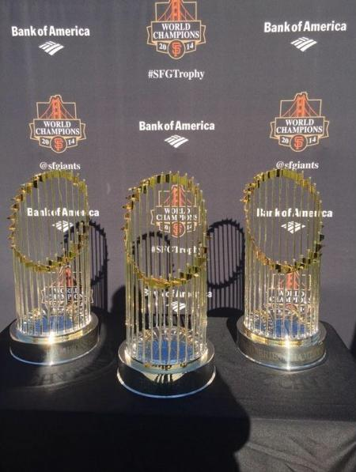

Hello, my name is JT Hardeman I will be talking about why the Bay Area sports teams are the best!!
The first sports team I will talk about is the San Francisco Giants! They have always been super amazing at the sport! They won 3 World Series trophies in a span of 5 years!
That alone speaks for itself!
The San Francisco Giants are known for their strong team culture, which have helped them excel in high-pressure situations.
Their commitment to player development has produced talent that consistently performs at a high level.
Additionally, the Giants' strategic approach to analytics and innovative game strategies allows them to maximize their players' to win multiple games.
With a dedicated fan base and a great history, the team continues to thrive in a competitive environment.
From Bumgarner, Posey, Huff, Lincecum, Cain, Scutaro, Sandoval, to Crawford, the San Francisco Giants were the definition of a dynasty from start to finish
click here Click the next page button to see what Bay Area Sports Team I will talk about next!